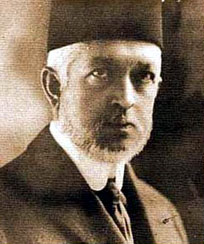

Mehmed Said Halim Paþa (1864-1921)

Son dönem Osmanlý Sadrazamlarýndan olan Said Halim Paþa, 19 Þubat 1864 yýlýnda Kahire'de doðdu. Ünlü Mýsýr Valisi Kavalalý Mehmed Ali Paþa'nýn torunu ve vezirlerden Hilmi Paþa'nýn oðludur. Ýlk Mýsýr Hidivi (Osmanlý Devletinin Mýsýr valileri için kullanýlan unvan) Ýsmail Paþa ile anlaþamayan ve Mýsýr'ý terk etmek zorunda kalan Halim Paþa, ailesi ile birlikte Ýstanbul'a gelip yerleþti.Said Halim, Ýstanbul'a geldikten sonra Arapça, Farsça, Ýngilizce ve Fransýzca'yý öðrendi. Öðrenimine kardeþi Abbas Halim Paþa ile beraber gittiði Ýsviçre'de devam etti. Lozan Hukuk Fakültesi'nden mezun olduktan sonra Ýstanbul'a döndü. Babalarý, yurt dýþýnda milli seciyelerinin bozulup bozulmadýðýný öðrenmek maksadýyla onlarý teste tabi tuttu ve karakterlerinin bozulmadýðý hükmüne vardý.
Sultan Abdülhamid tarafýndan, 21 Mayýs 1888 tarihinde Þura-yý Devlet (Danýþtay) üyeliðine atandý ve kendisine Paþalýk rütbesi verildi. Bu görevinde gösterdiði baþarý nedeniyle Rumeli Beylerbeyliðine yükseltildi (22 Eylül 1900).
Beylerbeyliðine terfi ettirildikten sonra Yeniköy'de kendi adýný taþýyan yalýsýnda, fikri bakýmdan kendisini geliþtirmek maksadýyla kitap okuyup incelemelerde bulundu. Kendisini çekemeyenler tarafýndan, yalýsýnda silah ve zararlý evrak bulundurduðu iddiasýyla Saraya ihbar edildi. Bu ihbar ve Jön Türklerle iliþkisi gerekçesiyle sürülerek, Ýstanbul'dan uzaklaþtýrýldý (15 Ocak 1903).
Mýsýr üzerinden Avrupa'ya geçerek burada bulunan Jön Türklerle temas kurdu. Yurt dýþýnda bulunduðu sýrada Ýttihat ve Terakki Cemiyetinin müfettiþliðine getirildi. Cemiyete maddi noktada destek ve yardýmlarda bulunduðu gibi, fikri konularda da katký saðladý. Ýkinci Meþrutiyetin ilanýndan sonra Ýstanbul'a geri döndü. Cemiyet içinde aktif olarak çalýþmalarýna devam etti.
1908 yýlýnda yapýlan belediye seçimlerinde, Ýttihat ve Terakki listesinden Yeniköy Belediye Baþkanlýðýna seçildi. Bir süre sonra Ayan üyeliðine ve 1909 yýlýnda da Cemiyet-i Tedrisiye-i Ýslamiye yönetim kurulu üyeliðine getirildi. Daha önce üyeliðini yaptýðý Þura-yý Devlet'e baþkan olarak atandý (1912). Yapýlan Ýttihat ve Terakki kongresinde genel sekreterliðe getirilerek, cemiyetin önemli kiþileri arasýnda yer almýþ oldu.
Said Halim Paþa, Mahmud Þevket Paþa kabinesinde Hariciye Nazýrý olarak görev yaptý. Sadrazamýn öldürülmesinden (1913) sonra vezirlik rütbesiyle Sadaret Kaymakamlýðýna ve bir gün sonra da Sadrazamlýða getirildi. Kurmuþ olduðu kabinede Hariciye Nazýrlýðýný da üstlendi. Ayný yýl içinde yapýlan kongrede, Ýttihat ve Terakki'nin baþkanlýðýna seçildi.
Sadrazamlýðý sýrasýnda yapýlan antlaþma ile Edirne'nin geri alýnmasýnda önemli katkýlarý oldu. Birinci Dünya Savaþý baþladýktan sonra, hemen savaþa girilmesi taraftarý deðildi. 1916 yýlýnda yapýlan kongrede ikinci defa cemiyetin baþkanlýðýna seçildi. Önce Hariciye Nazýrlýðýndan (24 Ekim 1915) ve daha sonra Sadrazamlýktan (4 Þubat 1917) istifa etti. Mondros Mütarekesi'nin imzalanmasýndan sonra savaþ sorumlusu olarak mahkemeye çýkarýldý.
Gerek hariciye nazýrlýðýndan gerekse sadaretten istifa etmesinin en önemli sebeplerinden bir tanesi parti içi baskýdýr. Özellikle Talat Paþa'nýn Sadrazam olmak istemesi, sorumsuz kiþilerin devletin iþlerine müdahale etmeleri ve gayr-i meþru hareketlerine son vermemelerinden dolayý istifa etmiþtir. Ancak, Sadaretten ayrýldýktan sonra da parti ile baðlarýný koparmamýþtýr.
Birinci Dünya Savaþý sonrasý, Ýttihat ve Terakki'nin diðer ileri gelenleri için olduðu gibi, Said Halim Paþa için de hazin bir dönemin baþlangýcýdýr. Çýkarýldýðý mahkeme sonrasý önce Mondros'a, oradan da Malta'ya sürgüne yollandý. Malta'da serbest kaldýðý halde Ýstanbul'a geri dönemedi. Çünkü, geri döndüðünde Ýstanbul'a kabul edilmeyeceði kendisine bildirilmiþti. Bunun üzerine Roma'ya yerleþti. 6 Aralýk 1921 tarihinde, akþam üstü arabayla evine döndüðü sýrada bir Ermeni militan tarafýndan alnýndan vurularak þehit edildi. Bilahare bu militan Ermeni terör örgütü Taþnaksütyun tarafýndan milli kahraman olarak ilan edilmiþtir. Hayatta iken geliþine izin verilmeyen Paþa'nýn cenazesi Ýstanbul'a getirilerek, Sultan II. Mahmud'un türbesinin de bulunduðu bahçede, babasýnýn yanýna defnedildi (29 Ocak 1922).
Said Halim Paþa, Osmanlý Devleti'nin en bunalýmlý döneminde Sadrazamlýk gibi çok aðýr vazifeleri ihtiva eden bir makamda bulundu. II. Abdülhamid'i istibdat uygulamakla suçlayýp çok daha aðýr bir istibdadý uygulayan bir cemiyetin ve partinin mensubu idi. Cereyan eden hadiselerde olumlu veya olumsuz etkisinin ve sorumluluðunun olmamasý hiç bir zaman iddia edilemez. Ancak, her ne þekilde olursa olsun Birinci Dünya Savaþý ve maðlubiyetinin bütün suçunu, iktidarý elinde bulunduran partiye yüklemek insaf ölçülerine sýðmaz. Ýktidarlarý boyunca, kendilerinden kaynaklanan hatalarýný ve yanlýþ politikalarýný eleþtirmek, muhaliflerinin en tabii hakkýdýr. Savaþýn kaybedilmesi, parti ileri gelenlerinin yurtdýþýna kaçmalarý veya çýkarýlmalarýndan sonra, top yekun bir saldýrýya geçip düþmanlarý dahi sevindirecek, insafsýz eleþtirilerde bulunmak asla vatanperverlikle baðdaþmaz.
Bu hazin dönemi yaþayan ve fiilen bazý hadiselerin içinde bulunan Bediüzzaman Hazretleri, yapýlan muhalefete karþý çok önemli ikazlarda bulunmuþtur. Ýttihat ve Terakki'nin yanlýþlarýný eleþtirmekten çekinmeyen Bediüzzaman, haksýz eleþtirilere de karþý çýkmýþtýr. "Ýttihada þedit muarýzdýn. Neden þimdi sükût ediyorsun?" þeklindeki suale; "Düþmanýn onlara þiddet-i hücumundan..." diye karþýlýk verir. Ýttihatçýlara hücum o kadar artmýþtýr ki, onlarýn iyi hasletleri olan azim, sebat ve Ýslam düþmanlarýna karþý vermiþ olduklarý mücadeleleri dahi bu hücumlardan nasibini almýþtýr. Bediüzzaman; "Bence yol ikidir; mizanýn iki kefesi gibi. Birinin hiffeti, ötekinin sýkletine geçer. Ben tokadýmý Antranik ile beraber Enver'e, Venizelos ile beraber Said Halim'e vurmam. Nazarýmda vuran da sefildir." demek suretiyle, muhalefetin hassas noktasýna iþaret etmiþtir. Çünkü, muhalefet, düþmanýn iþine yarayacak bir hal almýþ vaziyettedir (Sünuhat, s. 67-68).
Said Halim Paþa, yaþadýðý dönemde Ýslami konularýn savunucusu olup, Ýslamcýlýk düþüncesinin önde gelenlerinden birisi olarak kabul edilir. Yazmýþ olduðu eser ve makalelerinde fikirlerini ortaya koydu.
"Ýslam'da Teþkilat-ý Siyasiyye" adlý eserinde, Ýslam'ýn siyasi ve sosyal olaylara bakýþý üzerinde durdu. Ýslam müesseseleri ile Batýnýn siyasi ve sosyal müesseselerinin karþýlaþtýrmasýný yaparak, birbirlerinden farklý olduklarýný ortaya koymaya çalýþtý. Devlet baþkanýnýn halk tarafýndan seçilmesi, meclisin güzide insanlardan teþekkül ettirilmesi ve halk tarafýndan oluþturulan bu meclisin hükümeti denetleme yetkisinin olmasý gerektiði gibi fikirleri savundu. Ona göre devlet baþkaný hem Ýslam kanunlarýna hem de halka karþý sorumludur.
Bir çok yazýlarýnýn bir arada toplandýðý ve "Buhranlarýmýz" adlý eserinde; Meþrutiyet, taklitçilik, fikri buhran, taassup, gerilememizin sebepleri üzerinde yazmýþ olduðu fikirleri bir arada bulunmaktadýr. Sebilürreþad mecmuasýnda yayýnlanan makalelerinde, Ýslamlaþmak tabirinin nasýl anlaþýlmasý gerektiði üzerinde durdu. Müslümanlýk, inanç, ahlak, cemiyet, siyaset gibi olgularýn bir bütün teþkil ettiðini izah etmeye çalýþtý. Gerilemeden kurtulmanýn çaresi olarak; Ýslami esaslarý en güzel bir þekilde öðrenmeye, teferruatlý bir þekilde öðrenilen bu esaslarýn faziletli bir þekilde tatbik edilmesinin gerekliliðine dikkat çekti.
Said Halim Paþa, Batý tarafýndan isnat edilen taassubun; Müslümanlara karþý yapýlan haksýzlýk ve zulümlerin sonucu olduðunu yazar. Taassubu, Müslümanlara karþý yapýlan zalimane tutuma karþý takýnýlan haklý bir kine baðlar. Batý taklitçiliðini de eleþtirerek, Batý taklitçiliði neticesinde alýnacak siyasi ve sosyal müesseselerin felaketimize sebep olacaðýný belirtir. Meþrutiyeti savunan Paþa, körü körüne taklitçilik yerine, milletin kendi ihtiyaçlarýndan kaynaklanan sosyal ve siyasi düzenlemelerin yapýlmasý gerektiði inancýndadýr.